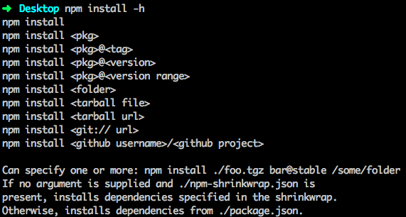

2.6.1 npm init
使用 npm init 初始化一个空项目是一个好的习惯，即使你对 package.json 及其他属性非常熟悉，npm init 也是你开始写新的 Node.js 应用或模块的一个快捷的办法。npm init 有智能的默认选项，比如从根目录名称推断模块名称，通过 ~/.npmrc 读取你的信息，用你的 Git 设置来确定 repository 等等。
2.6.2 npm install
npm install 是我们最常用的 npm 命令之一，因此我们需要好好了解下这个命令。终端输入 npm install -h 查看使用方式:

可以看出：我们通过 npm install 可以安装 npm 上发布的某个版本、某个tag、某个版本区间的模块，甚至可以安装本地目录、压缩包和 git/github 的库作为依赖。
小提示:
npm i是npm install的简写，建议使用npm i。
直接使用 npm i 安装的模块是不会写入 package.json 的 dependencies (或 devDependencies)，需要额外加个参数:
npm i express --save/npm i express -S(安装 express，同时将"express": "^4.14.0"写入 dependencies )npm i express --save-dev/npm i express -D(安装 express，同时将"express": "^4.14.0"写入 devDependencies )npm i express --save --save-exact(安装 express，同时将"express": "4.14.0"写入 dependencies )
第三种方式将固定版本号写入 dependencies，建议线上的 Node.js 应用都采取这种锁定版本号的方式，因为你不可能保证第三方模块下个小版本是没有验证 bug 的，即使是很流行的模块。拿 Mongoose 来说，Mongoose 4.1.4 引入了一个 bug 导致调用一个文档 entry 的 remove 会删除整个集合的文档，见：https://github.com/Automattic/mongoose/blob/master/History.md#415--2015-09-01。
后面会介绍更安全的
npm shrinkwrap的用法。
运行以下命令：
npm config set save-exact true
这样每次 npm i xxx --save 的时候会锁定依赖的版本号，相当于加了 --save-exact 参数。
小提示：
npm config set命令将配置写到了 ~/.npmrc 文件，运行npm config list查看。
2.6.3 npm scripts
npm 提供了灵活而强大的 scripts 功能，见 官方文档。
npm 的 scripts 有一些内置的缩写命令，如常用的：
npm start等价于npm run startnpm test等价于npm run test
2.6.4 npm shrinkwrap
前面说过要锁定依赖的版本，但这并不能完全防止意外情况的发生，因为锁定的只是最外一层的依赖，而里层依赖的模块的 package.json 有可能写的是 "mongoose": "*"。为了彻底锁定依赖的版本，让你的应用在任何机器上安装的都是同样版本的模块（不管嵌套多少层），通过运行 npm shrinkwrap，会在当前目录下产生一个 npm-shrinkwrap.json，里面包含了通过 node_modules 计算出的模块的依赖树及版本。上面的截图也显示：只要目录下有 npm-shrinkwrap.json 则运行 npm install 的时候会优先使用 npm-shrinkwrap.json 进行安装，没有则使用 package.json 进行安装。
更多阅读：
注意: 如果 node_modules 下存在某个模块（如直接通过
npm install xxx安装的）而 package.json 中没有，运行npm shrinkwrap则会报错。另外，npm shrinkwrap只会生成 dependencies 的依赖，不会生成 devDependencies 的。
上一节：2.5 packge.json